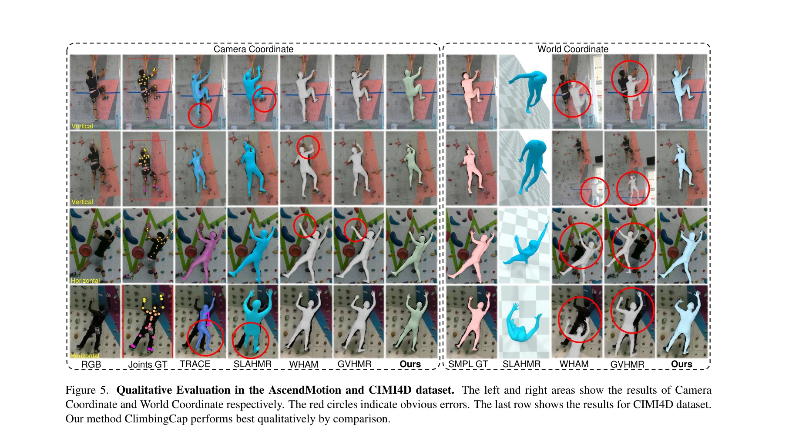
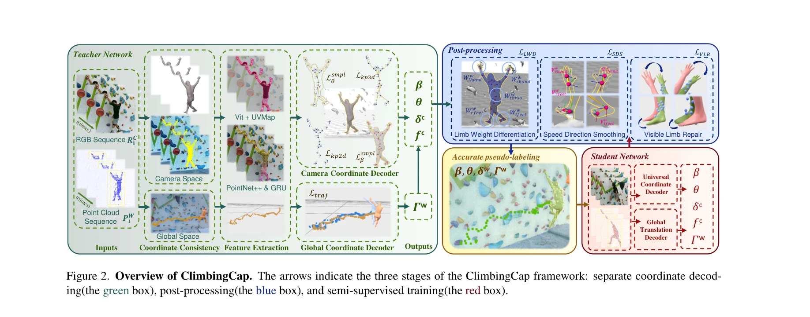

Essence

Figure 1. Overview. To address the challenging problem of global climbing motion recovery, we collect the dataset Ascend
ClimbingCap은 RGB와 LiDAR 멀티모달 데이터를 활용하여 암벽 등반 동작을 글로벌 좌표계에서 정확하게 복원하는 방법을 제안하며, 대규모 도전적 등반 동작 데이터셋 AscendMotion을 구축했다.
저자: Ming Yan, Xincheng Lin, Yuhua Luo, Shuqi Fan, Yudi Dai, Qixin Zhong, Lincai Zhong, Yuexin Ma, Lan Xu, Chenglu Wen, Siqi Shen, Cheng Wang | 날짜: 2025-03-27 | URL: https://arxiv.org/abs/2503.21268
Figure 1. Overview. To address the challenging problem of global climbing motion recovery, we collect the dataset Ascend
ClimbingCap은 RGB와 LiDAR 멀티모달 데이터를 활용하여 암벽 등반 동작을 글로벌 좌표계에서 정확하게 복원하는 방법을 제안하며, 대규모 도전적 등반 동작 데이터셋 AscendMotion을 구축했다.

Figure 5. Qualitative Evaluation in the AscendMotion and CIMI4D dataset. The left and right areas show the results of Ca

Figure 2. Overview of ClimbingCap. The arrows indicate the three stages of the ClimbingCap framework: separate coordinat
총평: ClimbingCap은 미개발 분야인 등반 동작 캡처에 대해 대규모 고품질 데이터셋과 멀티모달 별도 좌표 복원 방식의 창의적 방법론을 제시하여 높은 독창성과 실질적 기여도를 보여준다. 광범위한 실험 검증과 공개 예정인 데이터셋·코드는 커뮤니티 기여도 높으나, 환경 일반화와 단일 모달 방식의 개발이 후속 과제다.